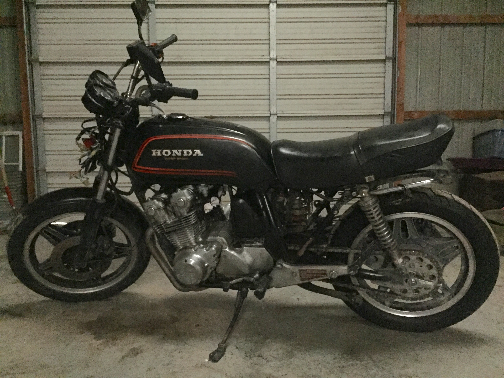
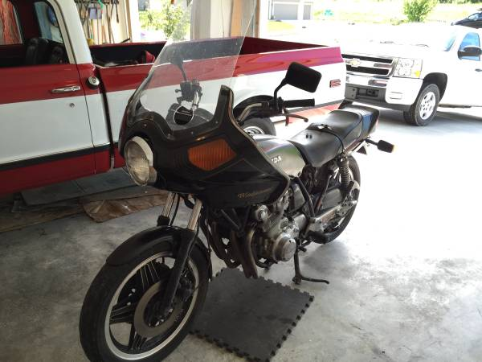
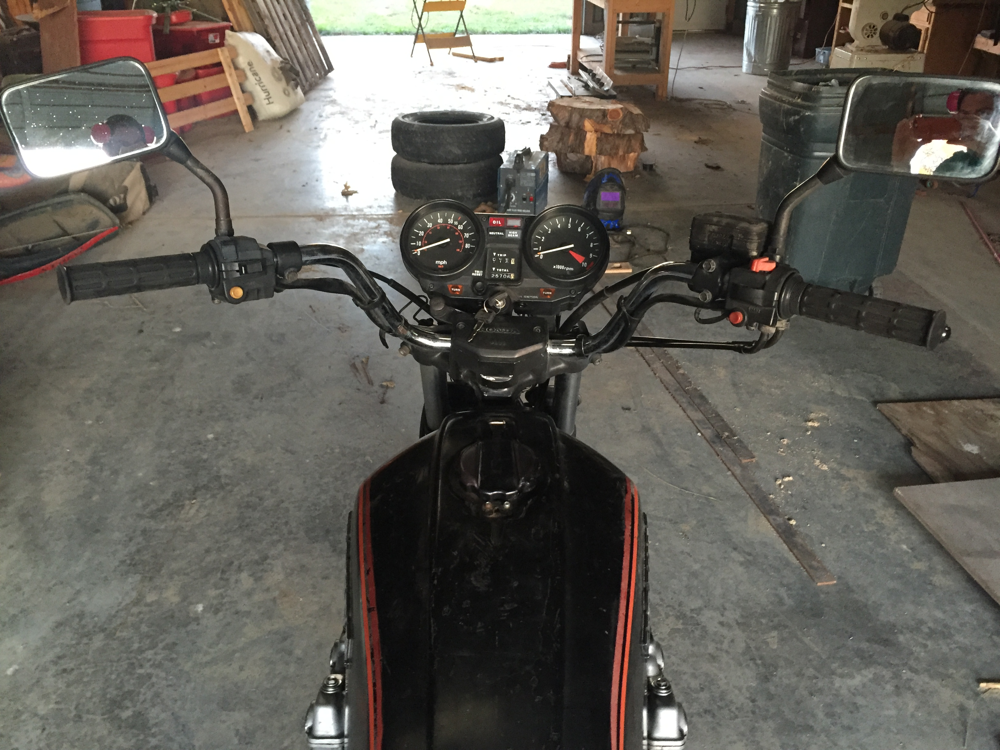

Starting a new build
-

Starting my first motorcycle build. I found a 1980 Honda CB750 on Craigslist that wasn't running but just needed a carb rebuild. I went and looked at it and it seemed to be in good shape overall. It had a new battery and new back tire.
-

It even came with a "beautiful" fairing that was quickly removed.
-

The view from the top.